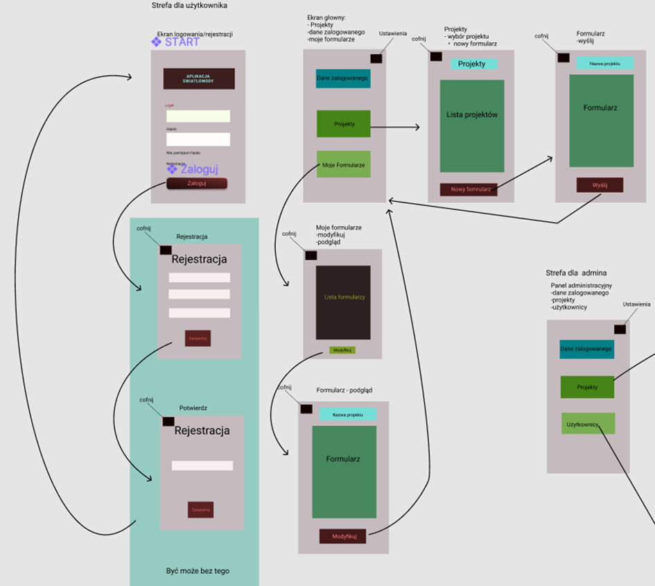

Projekty
Strony internetowe
Moja główna strona internetowa to ta, na której właśnie się znajdujesz. Tworząc tą stronę wykorzystałem proste mechanizmy JavaScript oraz styli CSS. Zaprojektowałem wygląd strony od początku do końca, a także stworzyłem potrzebne grafiki. Kod strony możesz znaleźć na GitHubie
Tu w przyszłości pojawią się kolejne strony internetowe.
Aplikacje
Na ten moment posiadam tylko jeden projekt niedokończonej aplikacji.

Optical Fiber App - Pracuję nad nią w wolnym czasie. Docelowo aplikacja ma służyć do ułatwienia pracy przy światłowodach. Będzie ona posiadała możliwość zapisywania postępów pracy nad określonym projektem. Głównie chodzi o zapisywanie ilości użytego materiału oraz jego rodzaju. Istotnym elementem będzie możliwość przeglądania postępu prac oraz tworzeniu raportów przez osobę odpowiedzialną za projekt. Raport będzie tworzony na podstawie informacji wprowadzonych przez monterów lini światłowodowych.
Tu będą się znajdować kolejne aplikacje.
Programy okienkowe
Tournament tracker -
Human Resources - program wykonany w C#, służy do zarządzania zasobami ludzkimi w firmie. Posiada funkcje dodawania, usuwania pracowników, przydzielania ich do grup. Możliwa jest też konfiguracja grup pracowników. Program tworzyłem na podstawię yt w ramach nauki.
Tu pojawią się kolejne programy.